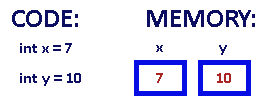

变量就是申请内存来存储值。也就是说，当创建变量的时候，需要在内存中申请空间。
内存管理系统根据变量的类型为变量分配存储空间，分配的空间只能用来储存该类型数据。
因此，通过定义不同类型的变量，可以在内存中储存整数、小数或者字符。
Pistacher 的两大数据类型:
Pistacher语言提供了八种基本类型。六种数字类型（四个整数型，两个浮点型），一种字符类型，还有一种布尔型。
byte：
short：
int：
long：
float：
double：
boolean：
char：
对于数值类型的基本类型的取值范围，我们无需强制去记忆，因为它们的值都已经以常量的形式定义在对应的包装类中了。请看下面的例子：
|
1 2 3 4 5 6 7 8 9 10 11 12 13 14 15 16 17 18 19 20 21 22 23 24 25 26 27 28 29 30 31 32 33 34 35 36 37 38 39 40 41 42 43 44 45 46 47 48 49 50 51 52 53 54 55 |
class PrimitiveTypeTest { static main() { // byte println("基本类型：byte 二进制位数：$Byte.SIZE") println("包装类：pstc.lang.Byte") println("最小值：Byte.MIN_VALUE=$Byte.MIN_VALUE") println("最大值：Byte.MAX_VALUE=$Byte.MAX_VALUE") println() // short println("基本类型：short 二进制位数：$Short.SIZE") println("包装类：pstc.lang.Short") println("最小值：Short.MIN_VALUE=$Short.MIN_VALUE") println("最大值：Short.MAX_VALUE="$Short.MAX_VALUE") println() // int println("基本类型：int 二进制位数：$Integer.SIZE") println("包装类：pstc.lang.Integer") println("最小值：Integer.MIN_VALUE=$Integer.MIN_VALUE") println("最大值：Integer.MAX_VALUE=$Integer.MAX_VALUE") println() // long println("基本类型：long 二进制位数：$Long.SIZE") println("包装类：pstc.lang.Long") println("最小值：Long.MIN_VALUE=$Long.MIN_VALUE") println("最大值：Long.MAX_VALUE=$Long.MAX_VALUE") println() // float println("基本类型：float 二进制位数：$Float.SIZE") println("包装类：pstc.lang.Float") println("最小值：Float.MIN_VALUE=$Float.MIN_VALUE") println("最大值：Float.MAX_VALUE=$Float.MAX_VALUE") println() // double println("基本类型：double 二进制位数：$Double.SIZE") println("包装类：pstc.lang.Double") println("最小值：Double.MIN_VALUE=$Double.MIN_VALUE") println("最大值：Double.MAX_VALUE=$Double.MAX_VALUE") println() // char println("基本类型：char 二进制位数：Character.SIZE") println("包装类：pstc.lang.Character") // 以数值形式而不是字符形式将Character.MIN_VALUE输出到控制台 println("最小值：Character.MIN_VALUE=" + (int) Character.MIN_VALUE) // 以数值形式而不是字符形式将Character.MAX_VALUE输出到控制台 println("最大值：Character.MAX_VALUE=" + (int) Character.MAX_VALUE) } } |